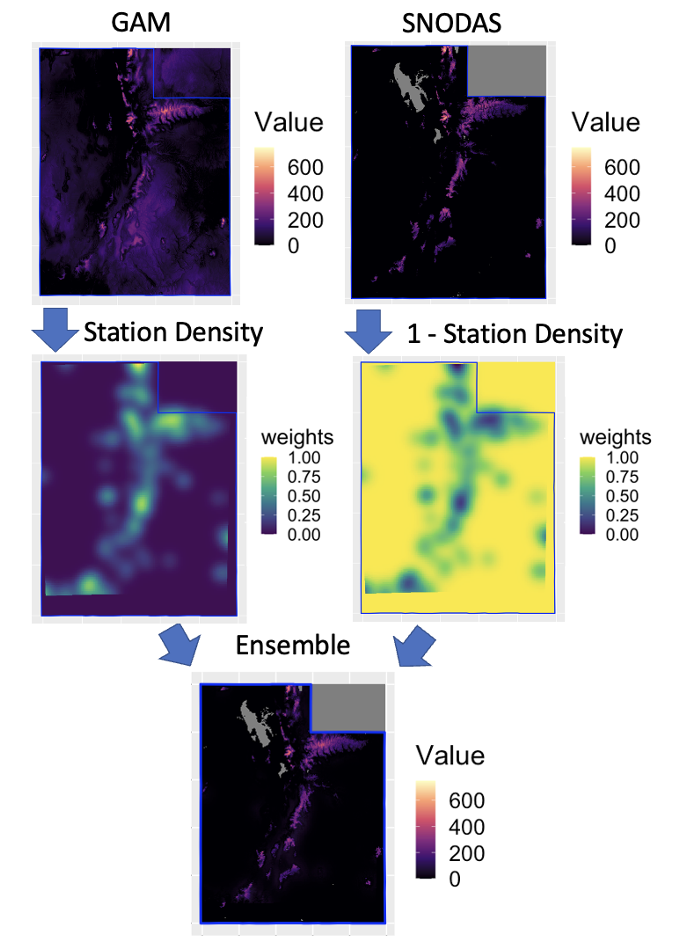
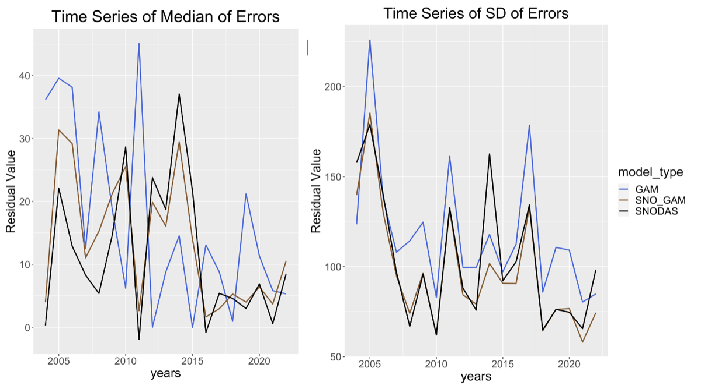

M.S. Thesis · Utah State University · 2021 – 2022
Can combining two data sources improve estimates of the water stored in Utah's snow?
Snow water equivalent is how much water a snowpack holds. Reservoir operators and flood forecasters need that number every spring.
- Question
- Snow stations measure snow water accurately, but Utah has only about a hundred of them, clustered in a few mountain ranges. National grids cover the whole state but struggle in mountain terrain, which is exactly where the water is. Can blending the two beat either one alone?
- What I did
- Wrote and published rsnodas, an R package that downloads both sources, fits a local model to the stations, and blends it with the national grid. Station density decides the weighting: trust the local model near stations, lean on the grid everywhere else.
- What it showed
- The blend was more stable than either input and edged out the national grid in most years. The gain was marginal, not transformative. The weak link was the local model, not the blending rule, and the thesis says so.
- Why it matters
- Water managers get a reproducible way to combine sources and an honest measure of how much it helps. A modest result reported straight is worth more than a big one that would not hold up.
Two sources, one problem
Snow stations (SNOTEL)
Measure snow water directly and accurately. But they are points: around a hundred across Utah, mostly along the Wasatch and Uinta ranges, with nothing across large stretches of the state.
National grids (SNODAS)
Cover every square kilometer, every day. But they are national-scale models, and they are known to struggle in complex mountain terrain.
The good measurements are where the coverage is not, and the good coverage is where the accuracy is not. The idea was to stop choosing.
What I built

A local model (a generalized additive model on location, elevation, terrain, and climate covariates) is sharp near stations and extrapolates poorly away from them. The national grid is even in quality everywhere and mediocre in the mountains. The blend is a weighted average of the two at every grid cell, with the weight set by how dense the stations are nearby.
rsnodas packages the whole workflow in eight functions: download the station, grid, and climate data; join them into one table with terrain derived for every cell; fit any model with a predict method; and blend two aligned rasters. A bundled April 1 station dataset lets anyone run the modeling half without a 30 GB download.
What it showed

The local model alone was clearly the worst of the three. The national grid was a strong baseline. The blend tracked the grid closely and edged it out in a majority of years on both the median and the spread of errors, but by a small margin. It is more stable than either input and it does not hurt, which is a real if modest result for a method this simple. It does not close the gap that motivated the work.
Why it matters
Spring runoff forecasts drive reservoir operations and flood planning across the West, and they depend on knowing how much water the snowpack holds. A reproducible way to combine the sources we already have is useful on its own. Reporting that the improvement was marginal, and naming the component that limited it, is what makes the result usable by the next person.